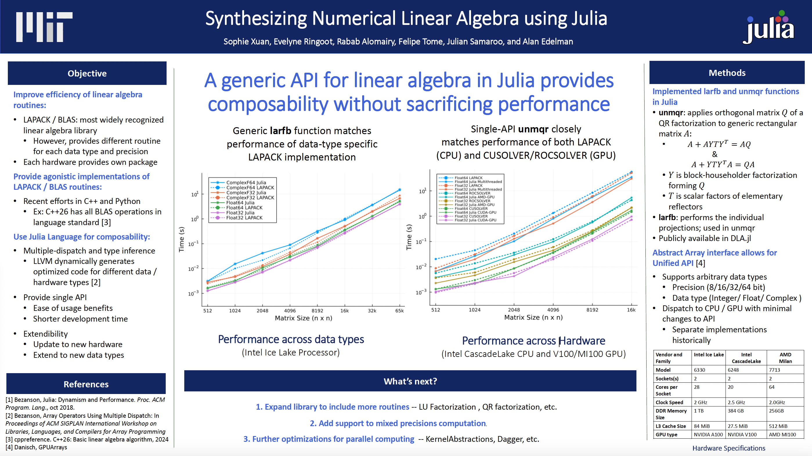

NextLA.jl
NextLA.jl is a hardware-agnostic, datatype-flexible dense linear algebra library written in pure Julia. It reimplements LAPACK/BLAS-style routines on top of KernelAbstractions.jl, so one code path runs on CPUs and on NVIDIA, AMD, Intel and Apple GPUs, for Float64, Float32, Float16, BFloat16 and complex element types, and adds mixed-precision recursive factorizations on top.
Instead of writing one implementation per data type and per device, as Fortran and C libraries do, NextLA relies on Julia's multiple dispatch, type inference and LLVM-based compilation to generate specialized code for each combination.

Features
- Unified API. Implements LAPACK/BLAS subroutines in Julia, avoiding type- and hardware-specific implementations. Supports
Float64,Float32,Float16, complex numbers and other numerical types. - Multi-architecture support. Efficiently runs on CPUs and GPUs, leveraging Julia's LLVM-based compilation: the same call runs on a
Matrix,CuArray,ROCArray,oneArrayorMtlArray. - High performance. Benchmarks show that Julia-based implementations achieve performance on par with or exceeding LAPACK/CUSOLVER.
- Mixed precision. Recursive factorizations on matrices that store each block in its own precision, from
Float64down toFloat8_E5M2. - Tile low-rank. Matrices stored as tiles compressed to low rank by adaptive randomized approximation, with GEMM between compressed and dense matrices.
- Future-proof and composable. Designed for extensibility, allowing new data types and hardware architectures to be integrated with minimal modifications.
Why Julia for dense linear algebra?
Traditionally, linear algebra libraries have been optimized for Fortran and C, requiring separate implementations for different hardware and data types. NextLA.jl leverages Julia's multiple dispatch, type inference, and metaprogramming capabilities to dynamically generate optimized machine code, making it a future-proof alternative.
Installation
NextLA is registered in the Julia General registry and is tested on Julia 1.10 and nightly.
using Pkg
Pkg.add("NextLA") # latest release
Pkg.add(url = "https://github.com/NextLinearAlgebra/NextLA.jl") # development versionFor GPU support, also add the backend package you want (CUDA, AMDGPU, oneAPI or Metal).
Quick start
using NextLA, LinearAlgebra
n = 1000
A = rand(n, n)
S = A * A' + n * I # symmetric positive definite
B = rand(n, 5) # five right-hand sides
# Solve S * X = B: a Cholesky factorization, then two triangular solves
F = copy(S)
potrf_recursive!(F) # S = L * L', L in the lower triangle of F
X = copy(B)
trsm!('L', 'L', 'N', 'N', 1.0, F, X) # solve L * Y = B
trsm!('L', 'L', 'T', 'N', 1.0, F, X) # solve L' * X = Y
S * X ≈ B # trueOn a GPU
using NextLA, CUDA, LinearAlgebra
A = CUDA.rand(Float32, 1000, 1000)
S = A * A' + 1000f0 * I # built on the GPU
F = copy(S)
potrf_recursive!(F) # same call as on the CPU, runs on the GPU
tril(F) * tril(F)' ≈ S # trueFor AMD, Intel or Apple GPUs, load AMDGPU, oneAPI or Metal and use ROCArray, oneArray or MtlArray instead.
Mixed precision
using NextLA, NextLA.MixedPrecision, LinearAlgebra
A = rand(1000, 1000)
S = A * A' + 1000I
M = SymmMixedPrec(S, 'L'; precisions = DataType[Float32, Float64]) # off-diagonal block in Float32
potrf_recursive!(M) # Cholesky directly on the mixed-precision matrix
L = reconstruct_matrix(TriMixedPrec(M)) # back to a dense Float64 factor
norm(L * L' - S) / norm(S) # about 1e-8, set by the Float32 blocksContinue with Getting started, or go to the API reference.
Citing
If you use NextLA.jl in your research, please cite the papers listed in CITATION.md (BibTeX included). GitHub's "Cite this repository" button uses CITATION.cff.
Contributors
- Rabab Alomairy (@Rabab53)
- Sophie Xuan (@Azura-yuwi)
- Evelyne Ringoot (@evelyne-ringoot)
- Vicki Carrica (@vickicarrica)
- Maxwell Onyango (@maxmlewa)
- Julian Samaroo (@jpsamaroo)
- Felipe Tome (@fda-tome)
- Abdulmalik Alquwayfili (@aalquwayfili)
- Akhil Akkapelli (@AkhilAkkapelli)
- Alessandro Carraro (@alecarraro)
- Xavier Henry (@silentPenguin07)
- Joseph Zhang (@jz268)
- Eric Lin (@cire694)
- Ruhundaka Ejilemele (@r-ejilemele)
License
MIT, see LICENSE.